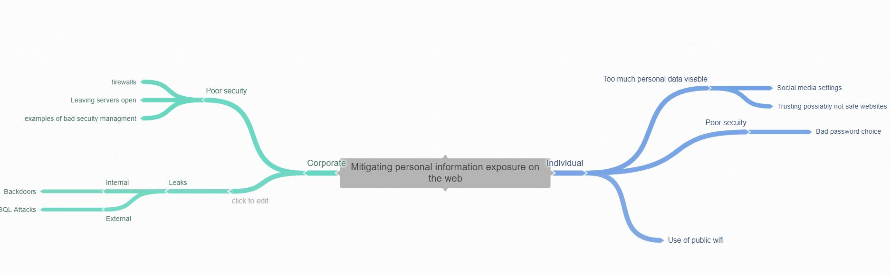
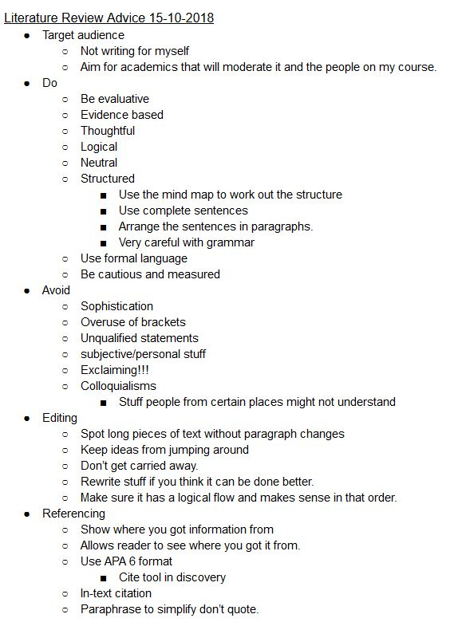
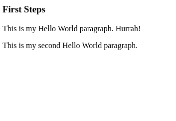
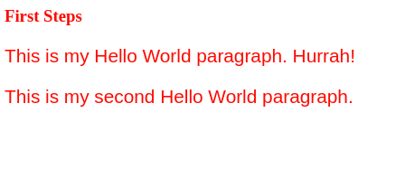

Week 1
Lecture- This first lecture was a summary lecture of what we should expect throughout the course, due to us not being told about the discovery log until the practical later in the week. However, from the sections, I do remember about this lecture we covered what the uni would be made up of, three sections, a literature review, a website we would produce and an end of unit exam. These making up 30%, 30% and 60% respectively. This style of lecture at the start of the unit is really helpful to me as it lets me understand what I can expect in the session for this unit and what is expected of me to complete across the year.
Practical- I firstly started by making a new document in my web fundamentals folder on Google Drive and named it discovery log. This document being this one. We then started working with the virtual machines that the university have provided us with, I was unable to get onto mine during this session due to my laptop's lack of a functioning wifi card, however, I plan to test it next week when I have fixed this issue.
The next task was to find the draft coursework example and make sure we favourite it so we can find it in the future when we need it. After that simple task, we had to move onto doing a website award task, for the most useful website award I decided to put Google.com, because I find it the website I always go to when I need help finding something. Therefore to me, it is the most useful website I use. The next one is the most flawed website, I chose www.nus.co.uk, because they have changed their name to totum yet they still use this as their main URL for now, however, this may eventually change.
Lastly, I had to decide what site I would create if I was making a website, this could be anything in the world. I decided I would make a version of WebMD but one that put you through with real doctors in their spare time. I thought this would be good because online medical advice is awful and has a large area for improvement.
Week 2
Lecture- This week's lecture was lead by Dr Nick Savage due to its focus on information and social engineering. I found this lecture to be really interesting as it focused largely on cybersecurity concepts, this being what the course I am doing is about. It was really interesting to learn about the extreme lengths that people go to in social engineering to find out information and gain access to accounts. We watched a video where someone phones up to a mobile phone company and used social engineering techniques to convince the person on the other end to give the attacker access. Nick went on to talk further about personal experience he’s had with this, specifically a task he occasionally sets his student, to find out as much as possible about him. The methods used by his students seemed rather extreme but effective. This presentation made me think a lot about my own internet presence and how much someone could find out about me if they wished to, as a result, I will be making some changes now.
Practical- In this week's practical session we worked on a few tasks linking to the lecture we had received earlier in the week. We started by making a shared Google Doc for the whole table so we could all contribute to the task and all be able to review this information at a later date. For the first task, we had to come up with as many forms of data that we generate on a day to day basis. With a shared document this took no time to come up with and share our ideas with the group, this lead to us being able to complete this task in around 10 minutes. The final results from this session can be seen below.
After we had come up with what we believe was all the data a normal person could generate in a day we worked on organising the data into various categories that we thought best linked them all together. We found that most things fell into two different categories, data that we create manually ourselves and data that is created in the background that we are not always aware of. We split them into these because it seemed most logical to us asa group after trying some other ideas such as secretive and non-secretive, as well as social media based and non-social media based. The grouping can be seen below showing our final result with all the forms of data inserted in the correct groups.
Automatically Collected Data: (Most of this is sensitive information that needs to be protected and not publicly available without the consent of the user)
- IP Addresses
- Location Information (secret, sensitive, public)
- Location Information is dependant on the security settings of the user. This information is highly sensitive and should not be shared publicly without the consent of the user from which it is taken. Can be spoofed.
- Cookies from other websites (Search History) (secret)
- Taken from the browser, shows stored information snippets from other sites. Cookies are confidential and are sensitive because it can give information on previous sites and even some passwords.
- Friend information (public)
- Depends on the privacy setting of the user this can range from public information to highly sensitive information.
- Browser information
- Highly sensitive
- Search Trends (secret)
- Previously Opened applications
- View time
- Previously viewed posts
- Other linked Social Media accounts (i.e. Facebook with Instagram)
Manually Created Data:
- Usernames (Sensitive depending on the purpose of the account)
- Passwords (Secret)
- Email Addresses (Public)
- Social Posts (Public)
- No Integrity checks due to freedom of information, other countries may be different.
- Social media likes (sensitive/public)
- Depends on the content being liked and how the user feels about it
- Personalised adverts (Application of the collected data)
- Personalised news posts (Application of the collected data)
- Shared Posts (Public/Private)
- Transactional data (secret)
- Private Messages
- Marketplace posts
- Looked at posts
- Photos
- Including people “tagged”
- QR Codes for adding friends
The last task we covered in this session was to look at how future social media sites could look at this information and associate it with these categories. This was near the end and we were running out of time so we didn’t come up with much, what we have got can be seen below.
How would a new social media website apply this information:
- Location and friend information can be used to make social profiles on the users of the website for targeting promoted posts and adverts
- Most will be able to associate these categories by looking at user data from a technical standpoint rather than one of personal privacy.
Week 3
Lecture- In this lecture, we learnt about literature reviews and how to write them. It started off by talking about what a literature review actually means, this being a formal evaluation of academic research on a particular subject. This was something I was already relatively familiar with as I have done a literature review before when I was working on my extended project at college. Rich then proceeded to explain to use some things we should avoid doing when writing and researching for our literature reviews. Then he showed us what we should aim to do and what the main purpose of a literature review is, also providing us with an example paragraph from a literature review.
The next section was covering what we should do before researching information, looking for keywords, topics and major authors in this area. This is great advice to follow for any academic research project and stuff I will definitely remember for use on other projects. The last point I found really helpful in this presentation was the areas of advice to look for information because I wanted to rush into this quickly and find as many useful sources as I could before I started writing my literature review. The points below are from my notes I took during the presentation, the last being a personal note I made from when I did my literature review back in college.
My notes
- Use the library and academic publishers to access papers, place called discovery
- Google scholar is another good tool.
- Personal recommendation to future me, remember jstor for EPQ.
Practical- During the practical session this week we had time to look at our literature review research in groups, which I found to be very helpful because it enables me to see what others were looking at and making sure what I was doing was on a similar sort of track. I was sat with five other people and we made a joint document where we place sources we had all found when researching. We sorted the sources we had found into two different groups, sources we thought were good and sources we weren't sure about so that later we could go way separately to analyse these sources better.
After we had done this I set about making a personal mind map for myself identifying the areas I thought where the main issues I should tackle in my literature review. Using this I cherry-picked from all the articles I had available the ones that would best fit these areas. This mind maps can be seen below.
This has given me a great start to my research and I'm now organised enough to know what I'm doing for the review.
Week 4
Lecture- This week's lecture was focused again on literature reviews and how to use academic writing in our literature reviews. This lecture personally wasn’t very interesting as I already felt confident with writing a literature review, however, I took notes still just in case anything new to me was mentioned.
Practical- Today we looked closer at academic writing, this time doing practical tasks in groups, there were nine main tasks to do, all related to learning how to make sentences sound better. We decided that with each task we would split the various sentence up so we would each attempt one, this worked to a varying degree as some people attempted to do multiple sentences and some tried to work on one someone else was working on. During the first task, I learned that some phrases can be lengthy and not necessary when a singular word could be used to replace them. This is something I will definitely take into account when writing my literature review. The other tasks focused on similar aspects such as choosing the better word out of two options, rewriting sentences so they make sense and other similar things.
Once we had overcome the minor degree of chaos we did manage to answer all the task. However, the last task was difficult as it required us to find some work we had previously written and improved it using what we had learned. Now I had learned a lot from this task however we had a lack of work to use from our group due to this being near the start of the year and not completed many assignments yet. We managed to find one example and worked on that. We lowered the word count of it and made it seem easier to understand. As we had finished this task very quickly we decided to watch the start of the Lynda course on writing in an academic style, which wasn’t particularly useful due to the time we had left to watch it.
Week 5
Lecture- This was our first lecture on markup languages. Rick and jacek stated by asking us if we had ever made a website before and how confident we were with HTML, personally i have made a number of websites before with a few being made entirely with HTML. I would say because of this I am semi-confident with HTML as i have used it before just not in a while and never anything super complicated.
Then Rich went on to show us a website about himself to show how he has used HTML before, I found this site to look rather basic and dull but its seems a professional way to show of this sort of information.
Once they had covered this they went on to explain how the process of marking up some text works, by using the star wars opening credits crawl. They started by writing out the text for the opening credits and drawing the main logo with text characters, however this occurs an issue if the window is compressed it no longer takes the correct form.
Practical- This week we started work on our first HTML websites in this unit. Our first task was to make a simple webpage in HTML with whatever title we wanted, for mine I decided to put my name as the title and my name in h1 tags on the page. I also put “hello world” in p tags on the page.
The second task was to take this simple page we had made and upload it to virtual machines the uni had provided us with. I have had complications with my machine before not working with my laptop, however this time when I went to connect through the software WinSCP to upload the web page it worked much more smoothly. They then wanted us to use our VM’s to set up a simple HTTP server from them to be used to host the web page. This is simply done by using the linux based terminal to navigate to the directory containing the webpage and running the HTTP-server command. I can then use my web browser go to the hosted web page by typing my virtual machines IP address into the bar at the top.
Week 6
Consolidation Week
Week 7
Lecture- This week's lecture taken my Rich was all about style, specifically the styling that lies underneath the HTML of web pages to make them look more than just a basic dump of text. Rich started by explaining that the markup is supposed to be just the basic parts of the webpage and a style sheet is used to arrange this and decorate it however needed. This is the correct way to do it for descriptive markup which is what we expect with modern websites, not procedural which is where the style is decided in the mark up. Things like br tags and blink tags are a good example of what not to do.
Rich went further to explain the usefulness of stylesheets by explaining how when ESPN changed their site to use a style sheet they saved over 2TB of bandwidth a day. After this he showed us how stylesheets are laid out and what commands can be used to adjust items on the HTML pages, things like background, font and margins can be were shown.
Practical- This weeks worksheet was working on producing stylesheets. The first task was to make file inside a new folder coating some HTML code provided on the sheet. Once we had done this we had to load up the page we had just copied across and this can be seen in the screenshot below.
The next step was to open some style tags within the file and put in some premade style attributes into the file. After adding this and loading up the site it changes the file to now have red text larger than the default. This is shown below. It is very easy to predict how this will effect the page because the CSS commands are easy to understand.
After we had achieved the basic style commands, we then had to make an external style sheet which is linked across to the HTML file. To do this we had to make a seperate file to contain the CSS, and use the line link rel="stylesheet" title="My Style" href="mystyle.css"> in the HTML file to connect this CSS file to the HTML file.
Week 8
Lecture- In this week's lecture we moved on from CSS or cascading style sheets to looking at tools and coding environments. Jacek is a big fan of Atom IDE, so this week's lecture was spent showing how powerful this IDE is.
For this week's lecture entry im going to talk about the tools they covered that I feel will be the most use to me when developing my own site for the coursework later in the year. The first one was multiple cursor mode, by holding the control key and clicking on multiple lines the user can select many lines to type out the same thing multiple times.
Atom beautifier is one amazing tool that takes all the code you have written in the currently open file and organizes it to make the file cleaner and easier to understand. The last good one they showed us was the live view addon for Atom that lets the user view the HTML without opening it in a browser. It appears to whatever side of the screen you set it to. This is something i'll definitely use as it will save me a lot of time when making my website.
Practical- This weeks practical was based around Atom, a powerful IDE which can be used for text-based editing like HTML. I originally used Visual Studio code as my chosen IDE for HTML editing however the practical session today is now leaning me towards choosing Atom as my everyday driver for HTML. The reasons for this is a large amount of customizability available in the settings for it.
Firstly, we had to install Atom, something I had already done before the practical. Then open up some of the HTML we had made in previous weeks within Atom to see how different it looks, specifically to show the syntax highlighting. After this we were encouraged to try out some of the tools and addons featured in this weeks lecture and more when browsing through the addon store built into Atom.
Week 9
Lecture- In this lecture, we learnt about the importance of design and specifically the MVC. MVC is a design pattern known as model view control and it is made up for four different sections, model, view controller and user. The model section focuses on the basics of the site, why is it there, who is it for, what will they want among many other bits. By answering these about the site I have to make for my coursework I can hope to design something that may be more fitting for what is needed. The view aspect is very simple, how will it look, what colours and fonts will be used. This is stuff I want to make a match and look good together so people will probably find my website more appealing. The controller section is the process of making the website easy to navigate and understand, the user will prefer a website that they can get around better as it makes them more confident using it. The last section is the user, they often don’t know what they actually want so I need to work it out for them when making my site.
Practical- This week’s practical session focused on a task where we had to organise different parts of a resort into categories. These were sections that would likely be on a website and we had to arrange them into groups that we thought would be relevant. We spent a large amount of time in our group of six discussing what we thought would be suitable categories for these, in the end, we came up with ten different categories. After a heated debate we came up with a solution most people agreed on and that can be seen below.

Week 10
Lecture- This week’s lecture focused on images in HTML websites and how to use the img tag with CSS to choose how an image is displayed.
Practical- Today's practical was about working with images in HTML and CSS, we had to download a site from github and look through it answering the questions on various pages. The answers from this can be seen below.
- What happens when the src URL is changed?
- Well if you were to change the source it would try to access a different image from the new source URL. If this resolved to an actual image that image would be replaced with this new image.
- What happens when we the mouse is hovered over the image?
- When the mouse is hovered over the image it gives the title that the image has been given, in the case of the one on the website we looked at it was “A University of Portsmouth Building”.
- What happens when both width and height CSS rules are used simultaneously??
- The height and width will both always be whatever it has been set to in the CSS, in the example given.
Week 11
Lecture- This week's lecture focused more on what can be done with image tags and how CSS can be used to modify their display on the page. Rich showed us his personal website that has an image of him on it wearing a HTC Vive, when you hover over the image it enlarges. He then showed us how to make this using hover commands in CSS.
Practical- This weeks practical was an extension on last weeks, using the same website for the tasks we had to try out but a few more had been added to include more around this weeks lecture. The answers to the questions I attempted are below.
- Notice that the img tag contains no styling instructions.
- It defaults to the original image size of 800 by 400 pixels.
- What happens if a second image is added to the page? Are both images formatted the same?
- Yes, because the img tag will be used for the second image and all the rules are defined for that image.
- What happens if you change the font size in the body rule to be 2em, 3em or larger?
- The text size is increased by the size set.
- What alternative sizing units are there? What about %, em or vmin?
- The percentage seems to work the same way as vh.
Week 12
Lecture- This week's lecture was a Christmas based HTML website. Using HTML and CSS Rich made a star wars Christmas jumper, however, this lecture is not overly important so I’m not covering too much on it.
Practical- For the third week in a row we were set the same set of tasks, I had yet to finish all of these tasks so this was a good opportunity for me to try and get the rest of them completed.
Week 13
Lecture- Matt took this weeks lecture with Jack instead of Rich and it focused on links within websites. It started by explaining the way websites and pages are found on the internet by using URLs. It turns out each part of the URL serves a different purpose, the first part being the scheme, this determines how the connection is carried out. The next being the hostname, which is used to locate the site on the web and lastly, the file path of the page that you wish to access.
He also went on to talk about a number of other interesting things you can do with links and URLs to fit what you might need. After this Matt went on to explain to us how to use the a tag to link to different URLs and provide navigation to the page. This was something I was already aware of how to do because I had done this when making my website for my coursework. I had used it in my coursework to form the basis of my navigation bar and I also intended to use it later in the week when I marker up the links for the references in my literature review.
Practical- This week we were given some tasks all around addressing and adding in links to web pages. This was something I had done before with my previous experience with HTML and I had recently done this when making my navigation bar only a few days before. I looked at the worksheet and found the tasks were all tasks I had done before at some point, so instead I decided to add some more links to my site by making links for all my references that are web based in my literature review. I did this by using the a tag. I had marked up my literature review already but it had the URL’s written as text.
Once I had done this I realized that the length of these URLs was causing the page to be extended and mess up the navigation bar and scale of the items on the page. I checked with Rich and discovered that we would not be marked on what was in out literature review at this stage, as it had already been done before, so I decided to cut back my literature review URLs to just the domain names of the sites, however the links still work to the full URLs.
Week 14
Lecture- I found this week's lecture really helpful this week because Rich and Jacek went through the marking scheme for the website coursework. This was really useful to me as I had been working through my website and wasn’t sure exactly what I should be doing to get the marks for the site.
The first section they covered was the basics of the site, is the home page the default page, something I had achieved already. Then checking all pages use HTML 5 throughout, easy accessibility throughout the site, page validation and validation links.
The second section is about the sites content, page navigation, is there a navigation bar, how easy is it to find all the pages. How good is the discovery log, does it have the required image somewhere in the site, more images are better. As well as that there must be a video somewhere too on the site and no way of telling its your site, it must be completely anonymous.
Then there is a section covering separation and form content, this section seems to mainly exist to make sure we markedup everything correctly and avoided using certain things. This section includes avoiding inline formatting, making sure all formatting is done with classes in an external style sheet, avoiding br tags that create page breaks. Then making sure font tags are not used as well as center tags. A normal font size should also be chosen as the user should be allowed to choose their font size not have it chosen for them by the website. A semantic structure and use of external style sheet were the last two covered in this section.
The last section they covered for the peer review of the site was the correct use of CSS selectors, the id selector, class selector, element selector and child/pseudo selectors. As well as these it also covered a few other small points such as site reaction to changing screen size, extent and also effect of the styling being part of this too. This gave me a lot to consider for my site as I know knew what I should be looking for to get the most possible marks.
Practical- This weeks worksheet was all based around website validation, a digital scan check that ensures that the code you have written is valid for the current version of HTML. This is an essential part of the coursework as our sites must include validator links. The work sheet explains what the current version of HTML5 is looking for, items such as article tags, and standard forms of measurement units like em’s. The sheet also explains that CSS pages can be validated too to check for errors within them.
The next task was then to run these validator checks for the pages we had made so far for our websites, I ran it for my site and noticed a few issues with article and section tags, I had failed to use them to layout the structure of my site so I made note to fix these issues as soon as possible. One last issue I also noticed I had was br tags that I had used to separate paragraphs, which is something I need to remove and use CSS to layout instead because this is procedural markup and not what we require from modern websites.
Week 15
Lecture- This week's lecture was on standardisation, it started by talking about the meaning of standards, like how most lectures that revolve around a key topic start. Moving onto some of the more specifics for types of standards such as de-facto standards, industry, government and international standards. I started to note the relevance with this topic after remembering the work I had done to my website in the previous week, I edited how I had marked it up by using the standard tags, such as article, section and aside. This was something I had failed to do before due to my knowledge of HTML being rather dated. As the presentation went on furthermore was discussed about how standards affect different areas and how they can be good and bad, with some believing that they can prevent innovation around the area. However I feel things like USB type C are really important in ensuring global compatibility.
After this he spoke about the important web standards we would be using when developing the sites for our coursework, these being TCP/IP, HTTPS, PDF, HTML, CSS and possible Javascript. We were also encouraged to look these up and learn more about what is required with the standards. I will endeavour to do this when I get home.
Practical- there was no worksheet directly for this week, possibly because the week's theme of standardisation is something that has to be thought about throughout the development process and it's probably best to give us time to check how are websites conform to it. I decided that I would use this weeks practical session to get the video working in my website. I wasn’t sure exactly what video I am going to use for my site because I really wanted to use a timelapse video I had taken a few weeks ago, however this has no sound to it so I wouldn’t be able to get extra marks for adding subtitles which is something I know how to do. This means that I am still considering changing my video to secure more marks. For know I will keep that original video in place while I get the technical side of the video to work. To get the video into my site I used the video tag with the source of the video inside this tag. I originally put my video at the bottom of my homepage under the image and text I had on there, however I quickly decided this wouldn’t work because it mean the user would have to scroll all the way to the bottom to view the video, which I would personally find annoying. To fix this completely removed the image and text about the image from the home page as it had very little relevance any more on the site.
I then looked into the sizing properties for my video so that it would fit in a desirable way on the page, I tried out a few different ways of formatting the style sheet for the video tag, as I only had one video planned I didn’t see a need to use a class. Eventually after looking at having it fill ¾ of the screen, using the vw measurement to trial other different measurements I decided upon setting the width to 100% and having the height set to auto. I did this because it fitted well in both desktop and mobile versions and also would have a full screen function as this is available in most common browsers.
Week 16
Lecture- This weeks lecture felt like a massive rant from Matt, it was about useability and he seemed to spend the whole time yelling about stuff that annoys him with computer systems. It did eventually turn into something more useful when he spoke about the cycle for making a site useable, by designing, building and testing repeatedly until people find the system easy to use. This was something was already thinking about with my site, being someone with a slow connection at home I get easily annoyed by large images and extra stuff I don’t need for a site to function as I need it to. There is very little I will consider changing about my site after this lecture as I have already taken this into account when designing my site, however I will change the video I added to my home page so that it has a smaller compressed version for slower connections and I will consider making it auto play. Once I had zoned back into what was going on in the lecture Matt was talking about the various usability mistakes that are commonly done on websites, the most important of these I found were:
- Neglecting mobile users, this is an essential part of the specification.
- Broken links, something that could easily occur in the literature review section of my site.
- Distracting images, this was occurring when I was selecting a background image for my site.
- Poor readability, this again was part of the issue with my background image and the text colour.
Practical- This week I worked on putting the finishing touches to my website, I already had the main requirements sorted as well as a design that I liked, however someone pointed out to me my text may not be readable to some people with the background I had chosen. In an effort to fix this I tried adjusting the opacity to different levels to see which might make the text easier to read.
I found that doing this actually made it harder for me to read than the original image and I also found it made the title harder to read. To fix this I intended to find a way that the background would turn opac once the user has scrolled passed the page title. The only issue with this was that after a long period of time inside the practical session and after; I could not find anyway to do it without using javascript something that I was not confident with yet. In the end I decided that it would be best for me to leave the background as it was because it would still be readable, however I may consider adjusting the font used later.
Week 17
Lecture- Matt took this weeks lecture again which was on accessibility, a topic which quickly became apparent that he was familiar with due to his red-green colorblindness. He started off by explaining the importance of making systems and services accessible to all, even throwing in a Tim Berners-Lee quote. He then went to show us some of the amazing web design done in the 90’s with ridiculous colour schemes and epileptic animation.
After Matt had showed us these issues, he then showed us the ways we can ensure our sites are accessible, by covering the web content accessibility guidelines. The first section is about perceivability:
- Provide text alternatives for any non-text content so that it can be changed into other forms people need, such as large print, braille, speech, symbols or simpler language.
- Provide alternatives for time-based media.
- Create content that can be presented in different ways (for example simpler layout) without losing information or structure.
- Make it easier for users to see and hear content including separating foreground from background.
These ones provide all the measures that can be done to make easier for the user to see what is on the screen. The next section is operability:
- Make all functionality available from a keyboard.
- Provide users enough time to read and use content.
- Do not design content in a way that is known to cause seizures.
- Provide ways to help users navigate, find content, and determine where they are.
These points cover all the ways to make easier for all users to interact with the site. Lastly, we have the understandability section:
- Make text content readable and understandable.
- Make Web pages appear and operate in predictable ways.
- Help users avoid and correct mistakes.
These point will be helpful for me to check my site and see if it complies with these points, from thinking back I believe my website's font might need to be changed because it's not the most reliable in the world. Luckily Matt then covered some useful tools to check our websites for usability which I will try later maybe in the practical session this week.
Practical- In this week's practical session we had the opportunity to take a look at out sites from a different perspective, that of someone who has a disability that may affect the operation of a computer.
The first one we tried was using tape to bind out hands into fists, this reduced the movement we had available with our hands making it very difficult to type and operate the mouse. I had my wireless mouse with me and I quickly discovered that a trackpad was easier to operate than this in this condition as the mouse tended to slide around a lot more, providing the user with less control.
The next one I tried was wearing a pair of tunnel vision glasses, this was made even more difficult because I found I could not wear these over my normal glasses which I need on all the time to see. This made using a computer with them even harder and I quickly learnt that a larger cursor was needed when wearing these glasses. With the normal cursor I found it almost impossible to find where it was on the screen making clicking objects very difficult.
Lastly, I tried some glasses that replicate having floating matter in your eyes, this again I had to wear without my glasses on, making it an extra challenge. This also proved to be very difficult as it was hard to find a way to see through it. However it was not as difficult as the tunnel vision glasses. This gave me a great deal to think about with my website, as some parts of it were not accessible with these disabilities simulated. I didn’t have time to make any changes this week however when I mark up my discovery log next week before I upload I may consider some changes.
Week 18
Lecture- This weeks lecture Rich and Jack were back to cover some of the second year content, this being javascript, one of the web based languages. They started by covering some basic facts about Javascript:
- Javascript was made to make java available on the web.
- Javascript enables many service to function better than their HTML only versions, such as Gmail and Google Maps.
- Javascript can be used using script tags.
After this they showed us how to add javascript to a HTML file and how to link a file containing javascript to a HTML file. Then we learnt about canvas, an element within HTML that lets the user draw objects and items. To set a canvas the HTML canvas tag must be used with the height and width set in this tag.
canvas id=”canvas” width=”800” height=”400”>/canvas>
The script tag is then used to write code to draw items on the canvas. To draw lines on the canvas firstly the style of the lines must be set, the code below shows that process.
- c.lineWidth = 3; Used to set the line width.
- c.strokeStyle = "red"; Sets the line colour.
To actually draw a line, you need to know that the start coordinates 0,0 are in the top left corner. To produce a line the code can be seen below, this will produce a line from the origin to the point 400,200.
- c.beginPath();
- c.moveTo(0,0);
- c.lineTo(400, 200);
- c.stroke();
They also went on to explain how to draw triangles without a gap in the corner from being made of lines, using c.closepath();. Once they had drawn this triangle they showed how to fill it using c.fill();, this fills the entire triangle with whatever colour has been set.
After covering the triangle they moved onto drawing a circle, this is done by using the arc command, by drawing an arc, which is a bit annoying but we have no choice. The command is c.arc(400, 150, 0, 2 * math.PI, false).
To show the practical uses of these commands Jacek showed how to produce a stick figure of himself on the canvas, he did this in function so he could call it whenever he wanted to appear at any coordinates.
The last part Jacek covered was how to animate sections within frames using requestAnimationFrame() when the browser is ready for the next frame. As well as functions that will run an animation when the user clicks.
Week 19
Consolidation Week